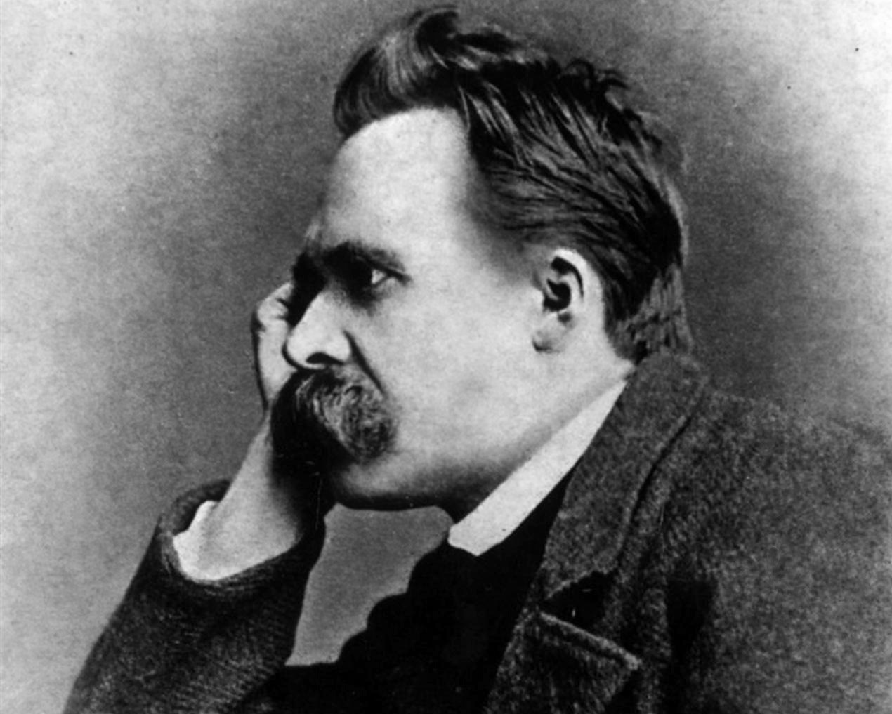

Here's a time line of Friedrich Nietzsche's life:
- Born on 15 October 1844, Nietzsche grew up in the town of Röcken (now part of Lützen), near Leipzig, in the Prussian Province of Saxony.
- Nietzsche attended a boys' school and then a private school, where he became friends with Gustav Krug and Wilhelm Pinder, all three of whom came from highly respected families.
- In 1854, he began to attend Domgymnasium in Naumburg. Because his father had worked for the state (as a pastor) the now-fatherless Nietzsche was offered a scholarship to study at the internationally recognized Schulpforta.
- In 1867, Nietzsche signed up for one year of voluntary service with the Prussian artillery division in Naumburg.
- 1869, with Ritschl's support, Nietzsche received an offer to become a professor of classical philology at the University of Basel in Switzerland.
- He was awarded an honorary doctorate by Leipzig University in March 1869, again with Ritschl's support.
- By 1882, Nietzsche was taking huge doses of opium, but he was still having trouble sleeping.
- In 1883, he tried and failed to obtain a lecturing post at the University of Leipzig.
- In 1887, Nietzsche wrote the polemic On the Genealogy of Morality.
- On 3 January 1889, Nietzsche suffered a mental breakdown.
- He likely suffered from clinical hemiparesis/hemiplegia on the left side of his body by 1899. After contracting pneumonia in mid-August 1900, he had another stroke during the night of 24–25 August and died at about noon on 25 August.
- For more information you can check Wikipedia Entry